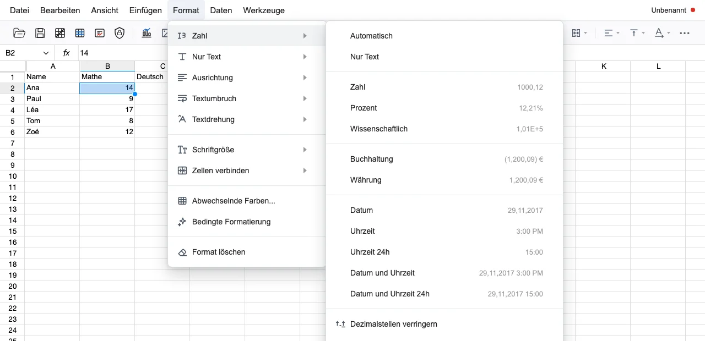

Die Oberfläche

Von oben nach unten: die Menüleiste, die Symbolleiste, die Bearbeitungsleiste, das Blatt, die Blattregister und der Zoom.
Die Menüs
| Menü | Inhalt |
|---|---|
| Datei | öffnen, speichern, drucken |
| Bearbeiten | rückgängig, wiederholen, nach unten, nach rechts ausfüllen |
| Ansicht | Gitternetzlinien, fixieren |
| Einfügen | Bild, Diagramm, Kontrollkästchen, Drop-down-Liste |
| Format | Zahl, Text, Ausrichtung, Verbinden, abwechselnde Farben, bedingte Formatierung |
| Daten | sortieren und filtern |
| Werkzeuge | schützen, dieses Handbuch (Benutzerhandbuch), DocTools, Quellcode, Version (Über...) |
Ein Häkchen kennzeichnet eine aktive Option: sichtbare Gitternetzlinien, fixierte Zellen, fett, Filter, geschützte Mappe.

Die Symbolleiste
| Schaltfläche | Aufgabe |
|---|---|
| öffnen, speichern | |
| Gitternetzlinien ein- oder ausblenden | |
| abwechselnde Farben | |
| bedingte Formatierung | |
| schützen; bläulich, wenn die Mappe geschützt ist | |
| ein Diagramm einfügen | |
| ein Bild einfügen | |
| rückgängig, wiederholen | |
| die Formatierung löschen | |
| Prozent, weniger oder mehr Dezimalstellen | |
| Automatisch, Arial, 10 | Zahlenformat, Schriftart, Größe |
| fett, kursiv, unterstrichen | |
| Textfarbe, Hintergrundfarbe | |
| Rahmen, Verbinden | |
| Ausrichtungen, Drehung, Umbruch | |
| fixieren | |
| automatische Summe und weitere Formeln | |
| sortieren und filtern |
Der kleine Pfeil einer Schaltfläche öffnet ihre Auswahl; die Schaltfläche selbst wiederholt die letzte. In einem schmalen Fenster liegen die letzten Schaltflächen hinter .
Die Bearbeitungsleiste
- Links das Namenfeld: die Adresse der Auswahl oder der Name des Bereichs. Sein Pfeil listet die benannten Bereiche auf und öffnet den Namens-Manager.
- Rechts von fx der Inhalt der Zelle samt Formel: er kann dort bearbeitet werden.
Das Blatt
- Ein Rechtsklick öffnet je nach Ort ein anderes Menü: Zelle, Spalten- oder Zeilenkopf, Blattregister.
- Ein neues Blatt hat 84 Zeilen und 60 Spalten (A bis BH). Weitere kommen per Rechtsklick, Einfügen, hinzu (Zeilen und Spalten).
- Der blaue Anfasser an der Ecke der Auswahl füllt aus.
Register und Zoom
Unten fügt ein Blatt hinzu, listet alle auf (Tabellenblätter). Rechts stellen − und + den Zoom ein; ein Klick auf die Prozentzahl bietet 10 % bis 400 % an.
Rückgängig
oder Strg Z macht rückgängig, , Strg Y oder Strg Umschalt Z wiederholt: Eingaben, Einfügen, Formatierungen. Der Verlauf beginnt neu, wenn eine Mappe geöffnet wird, Gitternetzlinien ein- oder ausgeblendet werden, die Mappe geschützt wird oder ein Name oder eine Regel der bedingten Formatierung hinzukommt. Diagramme gehören nicht dazu: sie werden mit ihren Schaltflächen bearbeitet oder gelöscht.